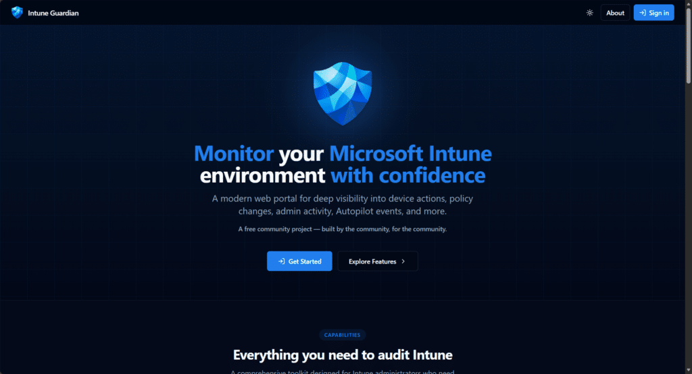
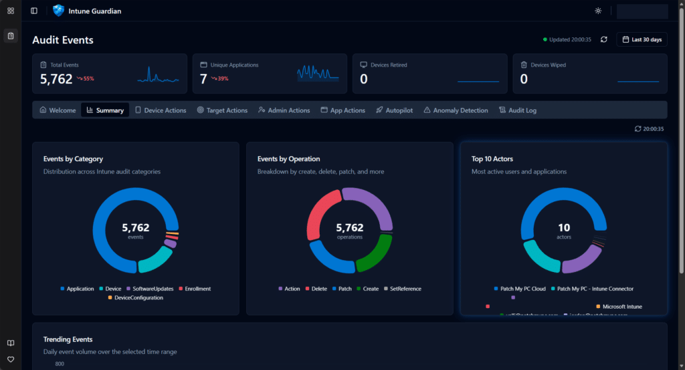
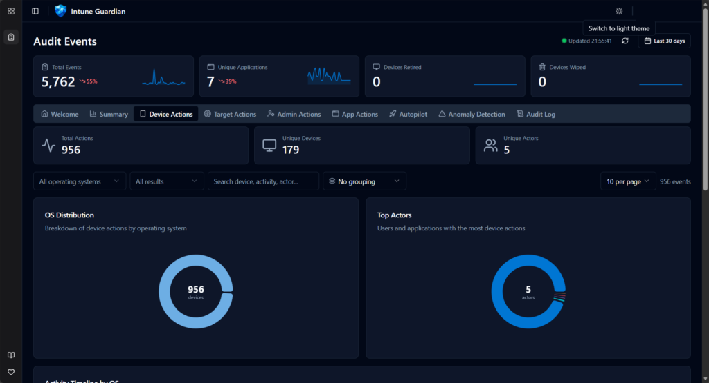
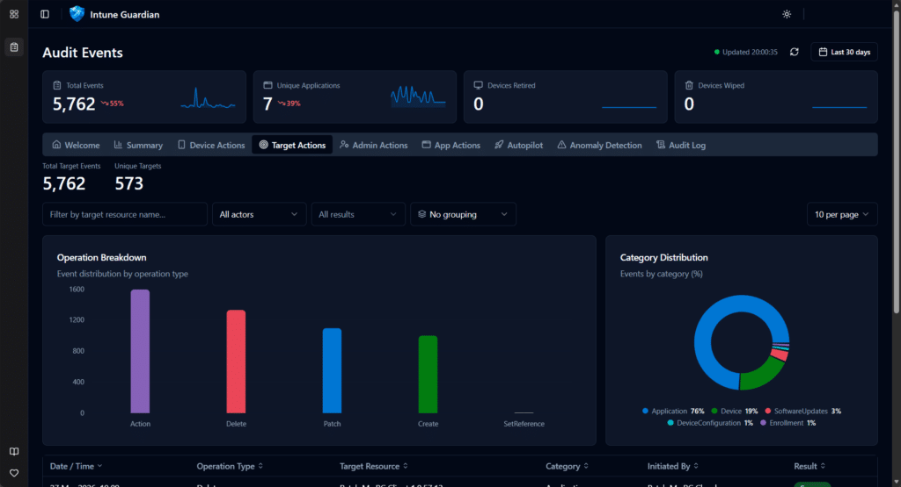
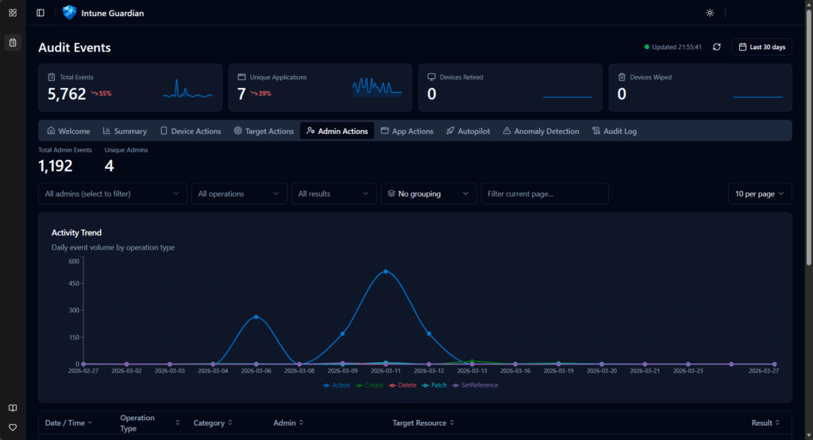
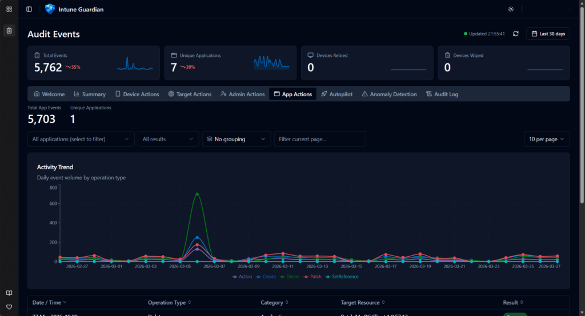
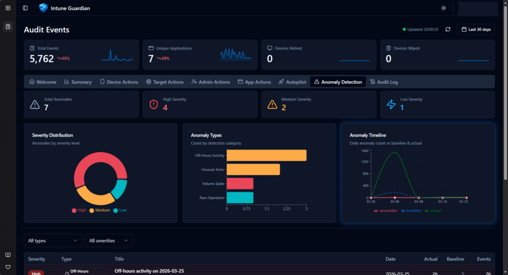
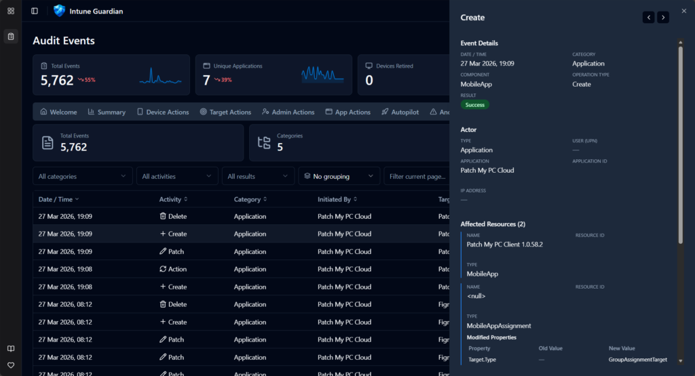
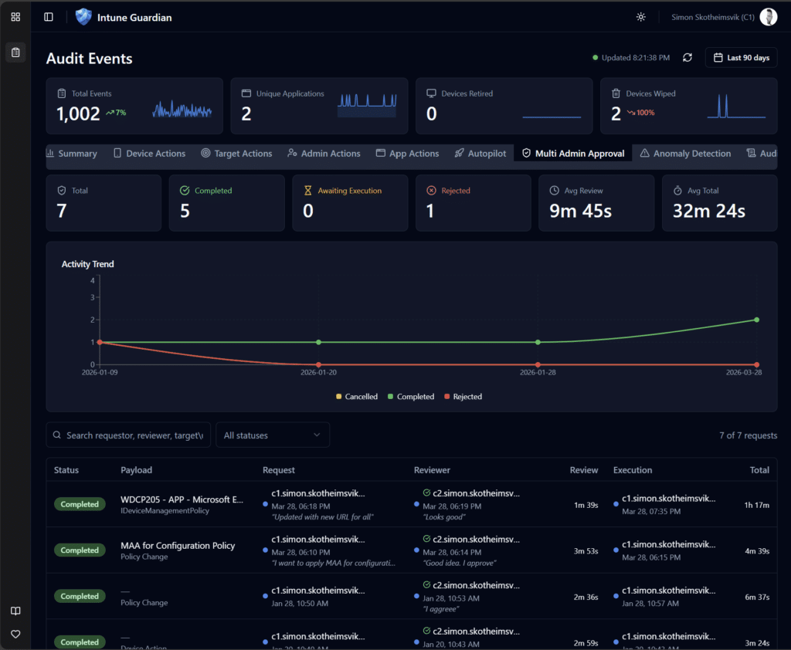

Back in October 2022, we released the MSEndpointMgr Intune Audit Dashboard — a KQL workbook designed to take the pain out of auditing Intune events. The response from the community was incredible. Over 58,000 views, dozens of deployments across enterprise environments, and plenty of feedback on what you wanted to see next.
We listened. And now we have built something entirely new.
{kind=link}

From Workbook to Web Portal
The original dashboard was a Log Analytics KQL workbook. It worked, and it worked well — but it came with friction. You needed an Azure subscription, a Log Analytics workspace, diagnostic settings configured, manual JSON edits during installation, and KQL knowledge to extend it. The comments on the original post told the story: many admins struggled with the setup, ran into blank dashboards, or wanted capabilities that a workbook simply couldn’t deliver.
Intune Guardian is the answer to all of that. It’s a purpose-built web portal — no Log Analytics workspace required, no KQL, no JSON editing, no Azure subscription needed. Sign in with your existing admin account, grant consent, and your audit data appears. That’s it.
Check it out today – https://intuneguardian.com
How It Works
Intune Guardian talks directly to the Microsoft Graph API on your behalf using the On-Behalf-Of (OBO) flow. When you sign in, the portal reads your tenant’s audit events in real time from the deviceManagement/auditEvents endpoint — the same data that powers the Intune admin center’s built-in audit logs, but presented in a way that’s actually useful.
Your data never leaves your control. There is no database on our side. No customer data is stored, cached long-term, or shared. The portal is a pure read-only window into your own tenant’s data, scoped to the permissions of the signed-in user. Multi-tenant by design — every organization gets its own isolated view.
What You Get
If you used the original workbook, you’ll recognise the structure, but everything has been rebuilt from the ground up:
{kind=link}

Summary Dashboard
High-level tiles showing total events, devices wiped, devices retired, unique applications — with sparkline trends. Category and operation breakdowns give you the big picture in seconds.
{kind=link}

Device Targeted Actions
Every wipe, retire, sync, reboot, and remote lock — filterable by OS, device name, and result. See who did what to which device, with full timeline visualisation broken down by operating system.
{kind=link}

Target Actions
Policy changes, configuration profile updates, app assignments — tracked by the target resource. Split between changes made by admin users versus automated service principal actions.
{kind=link}

Admin Actions
Filter by a specific administrator and see their complete activity footprint. Operation type breakdowns, success/failure rates, and trend data over time.
{kind=link}

Application Actions
Track actions performed by enterprise applications and service principals. Essential for environments with automation, third-party integrations, or delegated management.
Autopilot Events
Autopilot device lifecycle tracking — creates, updates, deletes — enriched with serial number, model, group tag, and manufacturer. Duplicate serial number detection flags potential provisioning issues before they become problems.
{kind=link}

Anomaly Detection
This is new. The portal analyses your audit data for patterns that don’t look right — volume spikes, unusual failure rates, off-hours activity, rare operations, and actors that appear unexpectedly. Each anomaly is scored by severity and explained in plain language. Think of it as a security analyst watching your audit logs around the clock.
{kind=link}

Multi Admin Approval
This tab gives you a clear overview of how Intune Multi-Admin Approval is used in your Intune environment. It surfaces approval events, who requested and approved actions, and when approvals occurred, making it easier to audit activity, spot unusual patterns, and strengthen oversight of high-impact changes.

Detailed Audit Log
The full filterable, sortable, paginated audit log with every field exposed. Hover over any row for a quick preview, expand for full detail, including modified property values (old vs new). Column grouping lets you slice the data by category, operation type, actor, or result.
The Tech Under the Hood
For those who care about the engineering (and we know you do):
- Frontend: React 19 + TypeScript, built with Vite, deployed to Azure Static Web Apps
- Backend: Node.js + Express + TypeScript, deployed to Azure App Service
- UI: Shadcn/UI components with Tailwind CSS — clean, fast, dark mode included
- Auth: MSAL with multi-tenant support and admin consent flow
- API: Microsoft Graph API beta via the official SDK, with server-side pagination and a 1-hour cache layer
- Charts: Recharts for all visualisations
The backend acts as a BFF (Backend-for-Frontend), so the browser never talks to Graph directly. Tokens are acquired via OBO flow, scoped per-user, per-tenant. No cross-tenant data leakage is possible by design.
What Changed Since the KQL Workbook
| KQL Workbook (2022) | Intune Guardian (2026) | |
|---|---|---|
| Prerequisites | Azure sub + Log Analytics + Diagnostic Settings | Just an admin account |
| Setup | Import JSON, edit workspace IDs, domain strings, workbook names | Sign in and grant consent |
| Data source | IntuneAuditLogs table (Log Analytics) | Microsoft Graph API (real-time) |
| Data retention | Depends on your Log Analytics retention policy | Graph API default |
| Extensibility | Edit KQL queries manually | Tabs added as new features ship |
| Multi-tenant | One workbook per workspace | Single portal, any tenant |
| Anomaly detection | Not available | Built-in |
| Autopilot tracking | Not available | Built-in with duplicate detection |
| Customer data storage | In your Log Analytics workspace | Zero — none stored on our side |
Getting Started
- Navigate to the Intune Guardian portal
- Sign in with a work account that has Intune read permissions
- Grant admin consent (one-time, per tenant) — the portal requests only
DeviceManagementApps.Read.All - Explore — your audit data loads immediately
That’s the entire setup. No Azure subscription. No diagnostic settings. No KQL.
What’s Next
We’re actively developing new capabilities. On the roadmap:
- Multi Admin Approval tab — Track MAA request workflows, approval timing SLAs, and policy coverage
- Compliance insights — Device compliance trends and drift detection
- Configuration drift — Track policy changes over time with diff views
The Origin Story
Intune Guardian started as a joint effort in an Airbnb heading into Microsoft MVP Summit week of 2026. The original audit workbook had served the community well for over three years, but we knew it was time to take the next step. What began as a late-night whiteboard session quickly turned into a working prototype — powered by too much pizza and not enough sleep.
Three principles were non-negotiable from day one:
- Minimal permissions — request only what’s needed, nothing more
- No customer data storage — your data stays in your tenant
- Pure read-only view — no modifications, no side effects
The team behind Intune Guardian is the same crew from MSEndpointMgr — Nickolaj Andersen, Jan Ketil Skanke, Maurice Daly, Sandy Zeng, and Simon Skotheimsvik. Combined decades of experience in Intune, Graph API, and enterprise mobility, channelled into a tool we wish we’d had years ago.
Conclusion
The KQL workbook was a good start. Intune Guardian is where we always wanted to end up — a purpose-built portal that makes Intune audit data accessible to every admin, in every tenant, without the overhead. Give it a try, and as always, let us know what you think.